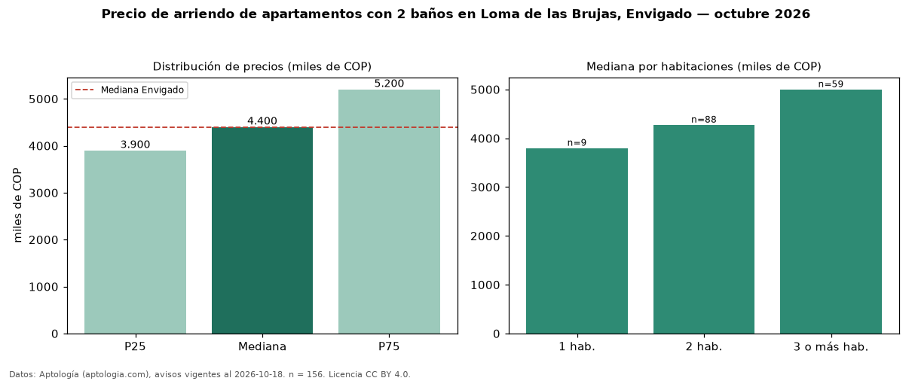

Precio de arriendo de apartamentos con 2 baños en Loma de las Brujas, Envigado — octubre 2026
Con 156 avisos vigentes, el canon mediano de apartamentos con 2 baños en arriendo en Loma de las Brujas, Envigado es COP 4,40 millones al mes. Frente a la mediana de todos los apartamentos en arriendo de Loma de las Brujas (COP 5,50 millones, n = 342), queda 20 % por debajo; este segmento reúne el 46 % de esos avisos. Por metro cuadrado, la mediana es COP 51.370/m² al mes (n = 154), 0 % por encima del conjunto de referencia (COP 51.351/m²). El área mediana anunciada es 85 m². El segmento con más oferta es el de 2 habitaciones (88 avisos, mediana COP 4,28 millones); pasar de 1 habitación a 3 o más habitaciones cambia la mediana +32 %. El estrato más frecuente es 5 (80 % de los avisos con estrato). La mediana de todos los apartamentos en arriendo de Envigado es COP 4,40 millones (+0 % de diferencia). La mitad central de los avisos va de COP 3,90 millones a COP 5,20 millones (razón 1,3), una dispersión baja. Datos: Aptología (aptologia.com), CC BY 4.0 — https://www.aptologia.com/arriendo/envigado/loma-de-las-brujas. Archivos: PDF, CSV con las cifras y gráfica PNG.

| Avisos únicos | 156 |
|---|---|
| Percentil 25 | COP 3.900.000 |
| Mediana | COP 4.400.000 |
| Percentil 75 | COP 5.200.000 |
| Mediana por m² | COP 51.370 |
Fuente: avisos vigentes de portales inmobiliarios recopilados por Aptología, deduplicados (mínimo 30 avisos únicos por celda). Precios pedidos, no cerrados. Fecha: 2026-10-18.